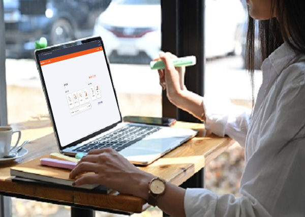

사용 편의성
매뉴얼이
필요 없습니다
필요 없습니다
전문가를 위한 강력하고 다양한 기능과 성능을 제공하지만,
초등학생도 쉽게 사용할 수 있는 편리함을 함께 제공합니다.
- 별도 교육 없이 누구나 바로 시작할 수 있는 직관적 UI
- 설문 초안부터 배포까지 한 화면에서 완성
- 설문 템플릿과 샘플 문항으로 빠른 설문 제작 가능

누구나 · 언제나
풍부한 설문 템플릿
다양한 문항 유형과 직관적인 보기 자동 완성 기능으로 설문을 빠르게 완성할 수 있습니다.
다양한 문항 유형
그래프 분석과 응답 필터
그래프 분석과 응답 필터 기능, 강력한 교차 분석으로 조사 결과를 실시간으로 확인합니다.
강력한 교차 분석

쉬운 설문 배포
편리한 샘플 문항 가져오기와 충실한 부가 옵션으로 설문 배포까지 손쉽게 완료할 수 있습니다.
편리한 배포